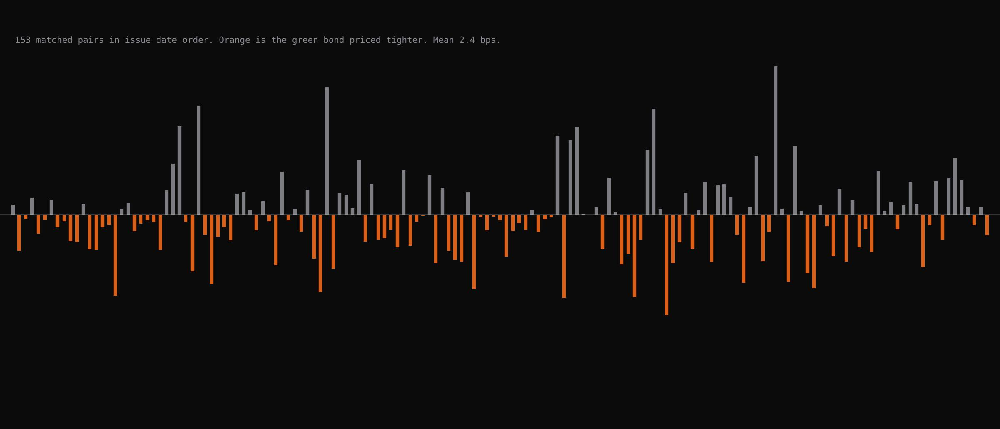
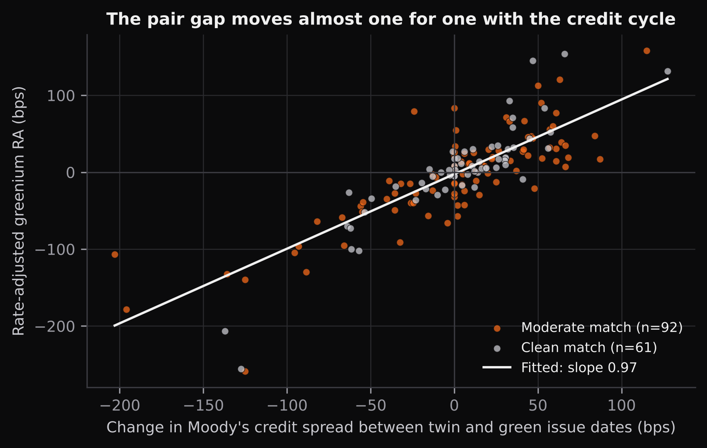
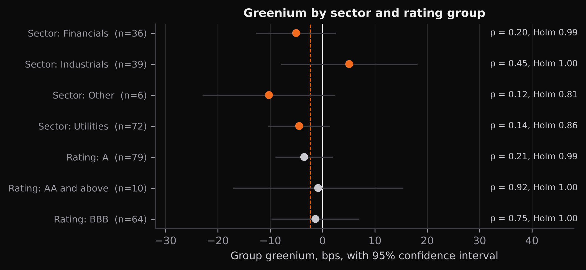
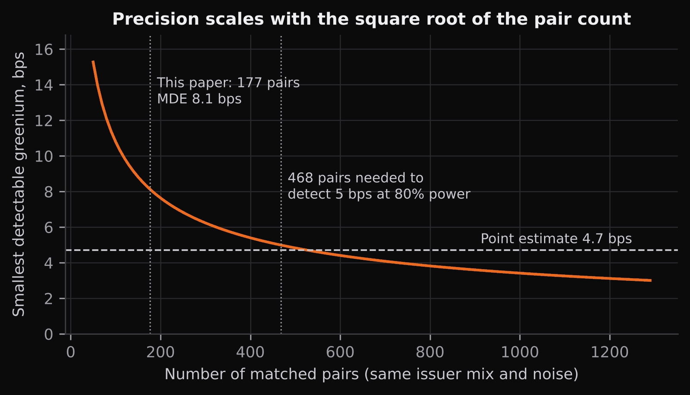
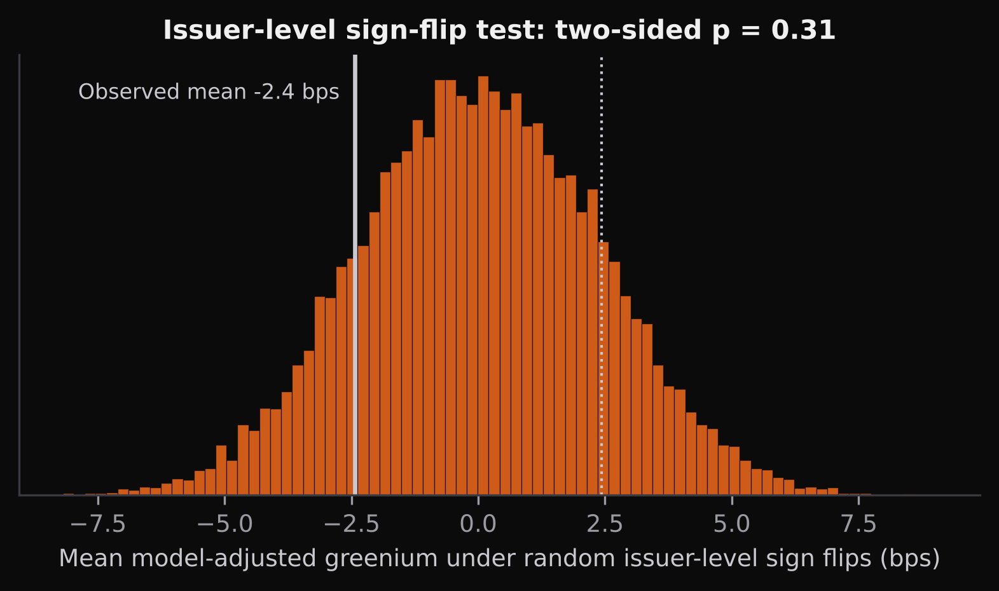
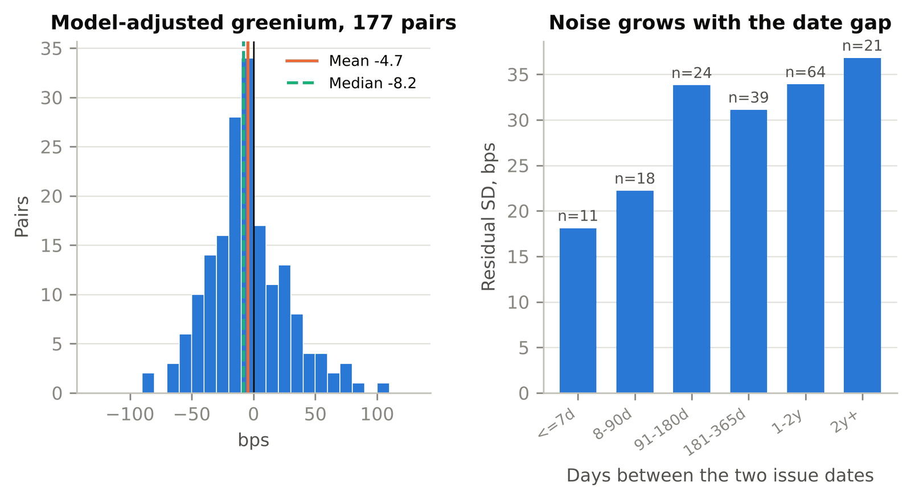
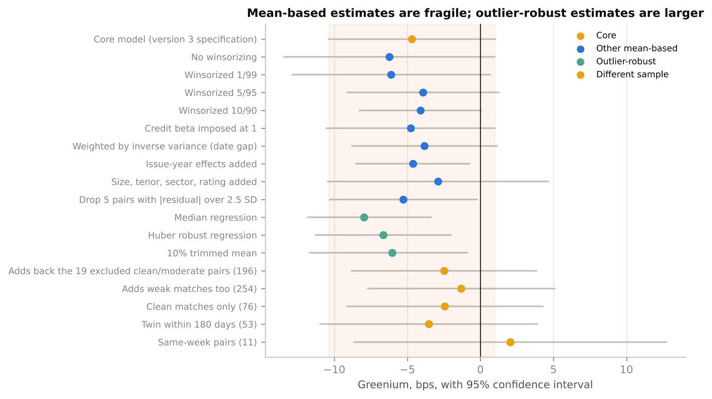
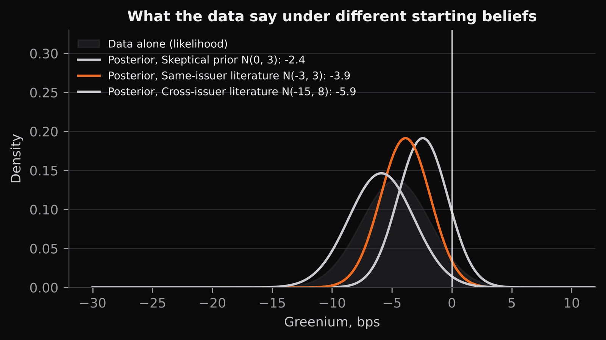

Green bond pricing research.

Do investors accept a lower yield on a green bond than on a conventional bond from the same issuer?
In short
- The question
- Do green bonds price tighter than the same issuer's conventional bonds?
- Data and method
- 153 matched pairs from 663 green bonds, adjusted for rates, credit and maturity.
- What I found
- 2.4 bps tighter on average, p 0.30. Not significant. Results are preliminary.
- What it means
- About $120,000 a year on a $500 million 10 year. Investor demand is a better reason to issue green.
A small gap that the data cannot pin down
Average gap, green tighter. 153 pairs, 88 issuers, p 0.30. Not significant.
Range across other estimators and samples. The data cannot narrow it.
The 10 pairs sold within a week of each other. No discount, but too few to be sure.
No detectable change across four periods, 2016 to 2026.
Smallest true gap this sample can detect reliably.
After cleaning 1,226 rows. 40 countries, about $386 billion of face value.
One pattern I cannot explain. Pairs where the conventional bond came after the green bond show a gap 11.8 bps larger, p 0.008. That needs a reason before anyone leans on the headline.
How many pairs would it take
I have 153. Each new pair is a terminal session and a twin search.
My point estimate is 2.4 bps tighter.
Smallest gap this many pairs can detect at 80 percent power
Pairs needed to detect the gap you picked
The research in thirteen charts
Click any chart to open it.

The dataset663 green bonds by issue year. The 153 in the sample are in grey. 
Why the credit adjustment mattersThe gap moves with credit spreads almost one for one. The slope is 0.97. 
Three steps from coupons to a greeniumEach step cuts the noise, from 104 bps to 64 to 27. 
The estimate across 24 specificationsVersions that keep every pair land between 2 and 4 bps tighter. The splits are exploratory. 
By sector and ratingFinancials show 5.1 bps tighter, p 0.20. No group is significant. 
By issue yearNo year departs from the pooled estimate. 
Seven dated eventsNone shifts the gap detectably. The test can only see moves of roughly 27 bps. 
The market behind the sampleThe 10 year Treasury and the credit index, with each issue date marked. 
How many pairs it would takeDetecting 5 bps would take about 265 pairs, and 3 bps about 735. 
A test that does not depend on the model's assumptionsA mean this large shows up by chance about 31 percent of the time. 
The 153 gaps, and why the date gap mattersNoise grows with the time between the two issue dates. 
Mean versus robust estimatorsRobust estimators give 3.5 to 4.5 bps. Adding back excluded pairs gives 0.2 to 1.2. 
What the data say under different starting beliefsA skeptic ends at 1.5 bps tighter, a believer at 3.4.


Method
The dataset holds 663 green bonds, of which 153 have a conventional bond from the same issuer that passes four pairing rules. The twin must be denominated in US dollars and hold the same payment rank, both bonds must be at least $250 million, and neither may be callable before 90 percent of its life. Each pair is dated at its Bloomberg pricing date and adjusted for rates, credit spreads and maturity with Treasury and Moody's data from FRED. Matches were first screened with help from Claude. Every number here is preliminary.
Against the market
The cleanest measurements of the greenium come from sovereigns that sell a green bond and a conventional bond with the same coupon and maturity, so that the only difference between the two is the label. Germany's March 2026 green Bund, 4 billion euros at a 3.14 percent yield, priced 1 bp through its twin, and the Finanzagentur puts the year's greenium at about half a basis point. Denmark's central bank says its recent twins trade 0 to 1 bp apart, down from 2 to 4 a few years ago, with its newest 10 year coming 1.5 to 2 bp inside.
My corporate pairs say about the same thing with more noise. The gap is in the low single digits, it is shrinking, and on any one deal you cannot tell it from zero. Bankers at Crédit Agricole cite 5 bp or more on bank paper. My financials subsample shows 5.1 bps tighter on 36 pairs, which seems to agree until you see the p value of 0.20.
What I got wrong first
The first was a 25 bps result that turned out to be an artifact. An early version showed the gap shrinking by 25 bps. I had measured credit spreads over the 10 year Treasury, so I was picking up the slope of the curve. Measured over the 30 year, the credit index tracks the ICE BofA investment grade index at a correlation of 0.95, compared with 0.40 before. I withdrew the claim.
The second was a dating error in my own file. In October 2026 I checked the largest residuals on the terminal and found that the file used settlement dates where pricing dates belonged. I pulled the Bloomberg pricing dates and applied the four pairing rules my supervisor adopted, which require a US dollar twin, the same payment rank, a minimum size of $250 million for both bonds and no early call. The average moved from 4.7 to 2.4 bps and the p value from 0.11 to 0.30. The rules were set after I had seen the earlier results, and the paper discloses that.
What comes next
- Verifying the largest residuals and 20 random pairs on the terminal, then rerunning with the confirmed set.
- Replacing coupons with offering yields and daily prices, which needs TRACE and Mergent FISD access.
- Finishing the twin search for the 164 live green bonds that still have no conventional match.
Sources
Built from Bloomberg, Climate Bonds Initiative and FRED data. My supervisor approved publishing summary statistics in writing. No bond level data is shown. Last updated October 2026.